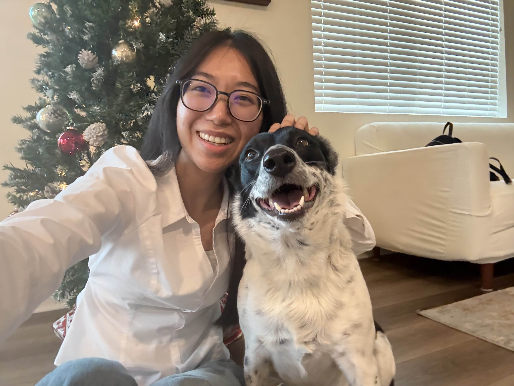

I'm a passionate student in data science and machine learning with a strong foundation in mathematics and computer science. Currently pursuing my Bachelor's degree at California State Polytechnic University Pomona, I'm diving deep into the world of data and robotics.
My journey in data science has led me to work on exciting projects from autonomous vehicle computer vision systems to NLP sentiment analysis and I love working at the intersection of theory and application, building models that solve real-world problems.
When I'm not working on robotics, I'm usually hanging out with my dog, hiking, messing with computer hardware, hunting for the best hotpot spots in town, or teaching myself new skills to stay ahead in the rapidly evolving field.
Feel free to explore my portfolio and reach out if you'd like to collaborate
